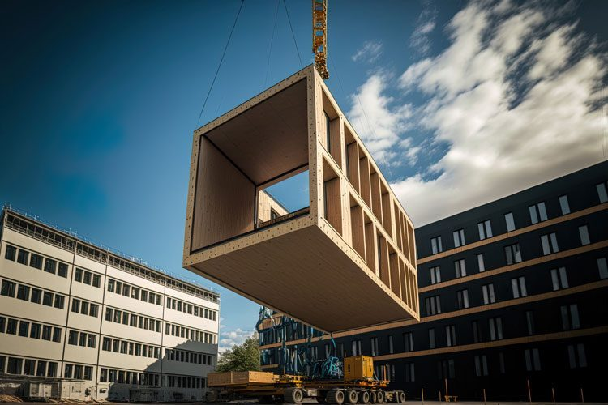
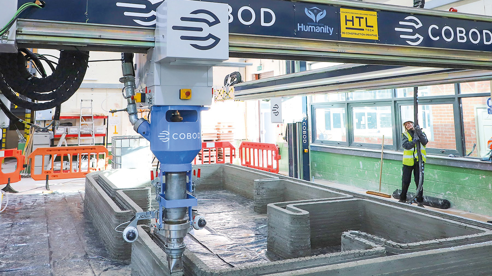
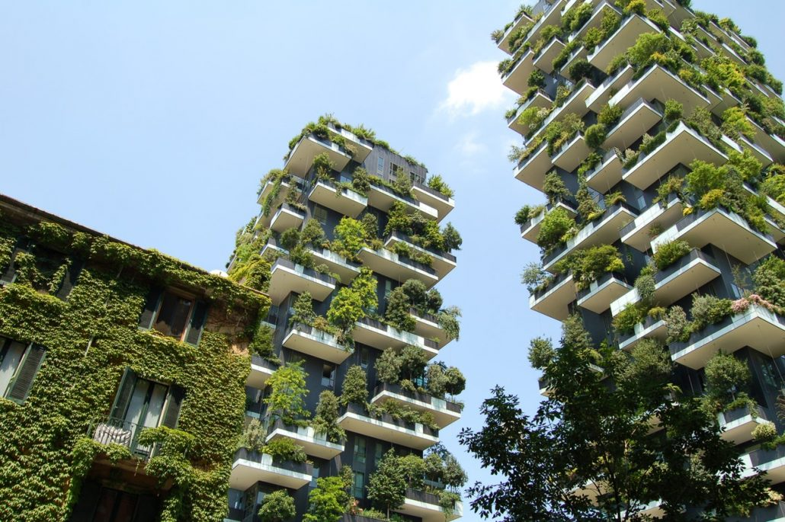
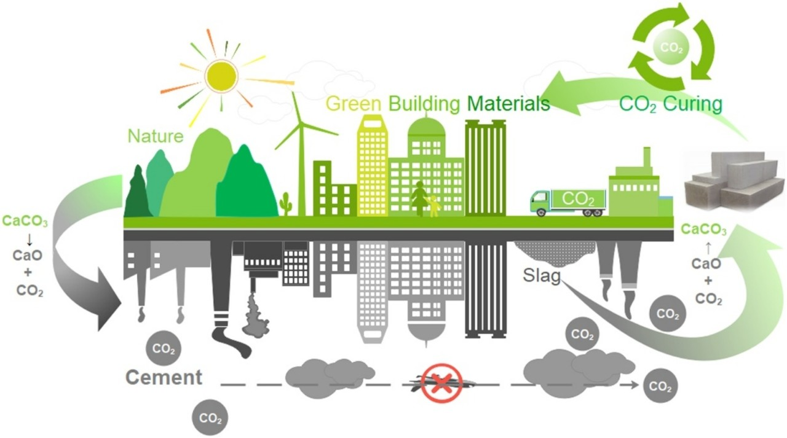

Page Contents
Digitalization and Building Information Modeling (BIM)
The construction industry is always adopting new technologies. BIM is an example of this. It allows developers to streamline project planning, management and designs. It allows for collaberative work, thereby improving decision making. This leads to a reduction in errors by creating/simulating a digital replica of a building's functional and physical qualities.
Prefabrication and Modular Construction
Prefabrication and modular construction are gaining traction in the construction industry. It is efficient, effective and sustainable. Having the ability to construct parts of a building off-site means that building components will reduce time on-site and minimize waste. A bonus is that it enhances quality control.
Robotics and Automation
Robotics and automation are being used to tackle tasks that are very repetitive, labor intensive or plain dangerous. An examples of this include bricklaying, autonomous equipment operation and even 3D printing of structures. As robotics are very precise, this improves safety and could increase productivity.
Green Building and Sustainable Practise
With a large shift on views about the environment, there is a large focus on green building practices and sustainable building materials. This also includes energy efficient systems, renewable power, well insulated and eco-friendly materials to reduce carbon footprint.
Advanced Materials and Nanotechnology
As we are becoming more advanced, so too will our construction materials. We are using nanotechnology to aid development of innovative and unique construction materials thhat will have enhanced properties over their normal counterparts. This can include strength, durability or thermal efficiency. Some examples of these developments include self healing concrete and carbon negative building materials.
Page Editor
Unleash your creativity with our page editor page! Dive in to customize your experience, from layout to content, and shape our website to suit your preferences. Whether you're tweaking design elements or refining functionality, the power is in your hands. Explore endless possibilities and make our platform truly your own. With intuitive tools and seamless editing features, transforming your browsing experience has never been easier. Let's collaborate to create something uniquely yours—visit our page editor page today
ID, w2045929@westminster.ac.uk Name, Siu Kitt Wong
ID, w2029084@westminster.ac.uk Name, Ashley Piper
ID, w2047599@westminster.ac.uk Name, Yair